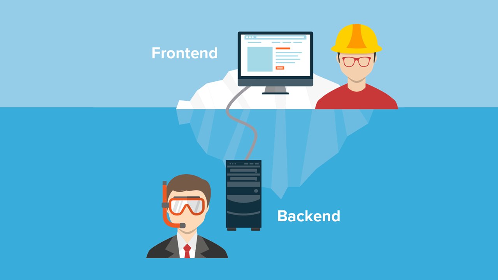

AI is disrupting relationships between Skills
Example of the relationship between frontend and backend engineers


every party consuming your work for producing its own is highly willing to transform you into an algorithm running on a simply manageable computer and I guess that you also are highly willing to transform yourself into an algorithm running on a simply manageable computer. Then you and who your work is for have already the same goal to achieve and this shared goal is what pushes technology always forward disrupting us, human beings, bit by bit until we are now thinking if algorithms will not end up controlling us by being as smart as us or even more.
Front-end engineers are consuming the work of backend engineers then front-end engineers are trying hard to get a computer to produce the code they need from backend engineers like us to get their jobs done because human beings have their own hazards while computers always output what we expect from them given that they have enough power for running this algorithm that produces the things to be outputted. That’s how this frontend engineering is disrupting backend engineering with this AI backend engineer.
if you are needed then it is very likely that the ones who need you are doing all they can to get rid of you because nobody likes dependency and this is more true for businesses where predictability is asked by managers, founders, and investors.
What lay at the background of what I am trying to describe to you is TRUST, computers are being more and more taken by businesses as being more trustworthy than human beings and computers can work forever without complaints maybe just some bugs to fix. But by trying to avoid dependency on trustless human beings businesses are being more and more dependant on computers at the point that could make us ask ourselves if computers aren’t actually controlling our economy more than we do. What I know about algorithmic trading and automated market-making makes me think that we are really near this point then it is reasonable to think that those who have more control over computers should have more bargaining or devastating power. The flash crash of May 06 and the recent GameStop squeeze are signals of this fact that I am trying to highlight.
The famous sentence Sofware is eating the world could be replaced by software is disrupting us and That’s each one of us given his role and status who use software for disrupting others like how the frontend engineer is trying to use AI software to get rid of the backend engineer and how the backend engineer is also leveraging the power of software to get rid of the system engineer and notice that cloud providers are also leveraging software for us to get rid of bare metal servers. This is the process by which computers gain shares of importance in how our world work a world where human beings would have only one thing two things to do buy and consume given that they have money.
You could be at the frontend of those who will build this future that I am describing because you could build and operate this AI backend engineer and make the life of frontend engineer easier but hide yourself to Backend engineers because they will be very angry about you who has fired them from this great company or startup they were working for.
Each Skill is leveraging the power of AI for disrupting the other skills that it needs to produce its works. Know your skill and find where you wanna stand in this future of AI which is happening right now because what I am describing is not about frontend and backend engineering only it’s about all skills.